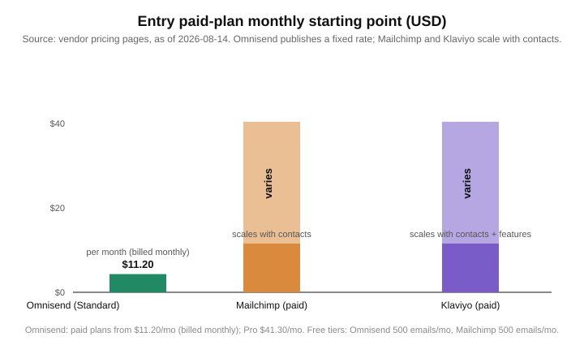

Best AI Tools for Email Marketing in 2026
Last updated: 2026-08-14
The short version
TL;DR: Omnisend is the best AI email marketing tool for most small and growing ecommerce businesses in 2026. It pairs genuinely useful AI features (a personalized product recommender, an AI segment builder, and AI that writes forms and reports) with pricing that undercuts heavier rivals, and its paid plans start around $11.20/month billed monthly (free plan: 500 emails a month for up to 250 contacts). Check Omnisend's pricing here.Email marketing software is getting smarter, and the useful shift is toward AI doing work that used to take hours: segmenting a list from a plain-language prompt, recommending the right products to the right subscriber, and building a signup form without touching a template. Some tools charge a premium for that. Omnisend folds most of it into plans that start well under the enterprise-tier alternatives, which is why it leads my recommendation. Prices below come from the vendors' official pricing pages as of 2026-08-14.
Which AI email marketing tools are actually worth considering in 2026?
Three tools cover most small-to-mid ecommerce teams, so the list stays tight:
- Omnisend - an ecommerce-focused platform built around email, SMS, and web push, with AI woven into segmentation, product recommendation, forms, and reporting.
- Mailchimp - the best-known name, AI writing and design tools plus marketing automations, easy to use and broadly integrated.
- Klaviyo - the data-heavy choice, treating email/SMS as part of a B2C CRM with a strong emphasis on predictive segmentation and ecommerce analytics.
How do the leading AI email marketing tools compare on price?
| Tool | AI value to expect | Free tier | Paid plans (official pricing) |
|---|---|---|---|
| Omnisend | Product recommender AI, prompt-based segment builder, Forms AI, Reports AI | $0 for 500 emails/mo, 250 contacts (free migration, 24/7 support) | Standard from about $11.20/mo billed monthly; Pro about $41.30/mo billed monthly with unlimited emails and 2,500 contacts (30% off prepaying 3 months) |
| Mailchimp | Generative AI writing and design tools, AI-driven automations and predictive segmentation | $0 for up to 500 emails/mo, up to 250 contacts | Essentials, Standard, and Premium tiers where list size and features drive the exact price; Standard covers 6,000+ emails and Premium 150,000 emails, so cost varies by contact count |
| Klaviyo | B2C CRM with AI; Composer (beta) that can audit and create flows and campaigns from a prompt | Free tier up to a limited sending volume (pricing page uses a calculator, so limits vary) | Precise cost depends on contacts and features; listed as a starting price that scales with list size and add-ons. Compare on the pricing page |

The table is honest about a wrinkle: Mailchimp and Klaviyo quote prices based on contact count and features, so a flat number would mislead. Across all three, the core AI features sit on standard paid plans, though deeper automation and data tools cost more as you scale.
What makes Omnisend a strong default for ecommerce email?
Omnisend is built for online stores, so the AI features target emails that drive revenue rather than generic blasts. The personalized product recommender AI pulls from each subscriber's browsing and purchase history to drop the right products into an automated email. The AI Segment Builder turns a plain-language audience description into a segment, and Forms AI and Reports AI handle signup-form design and performance analysis from a prompt (per Omnisend's pricing page, 2026-08-14).
Cost is the other half. Omnisend lists a free plan (500 emails/month, 250 contacts, free migration, 24/7 support on every plan) and paid tiers with Standard at about $11.20/month billed monthly and Pro around $41.30/month billed monthly, 30% off prepaying three months, and SMS from about $0.007 per message at high volume. It also markets itself as saving up to 35% versus Klaviyo at similar list sizes, a marketing number but a useful signal.
When should you pick Mailchimp instead?
Mailchimp is the safest choice when the team wants email that works and everyone already knows it. Paid plans add generative AI writing and design tools, automation flows, and predictive segmentation (per Mailchimp's marketing pricing page, 2026-08-14). The free tier caps at 500 emails a month for up to 250 contacts, and paid tiers go further: Standard handles 6,000+ emails a month and Premium 150,000.
The trade-off is pricing that scales with contacts. Exact cost is driven by your list size on the pricing page, so plug in your number before committing.
When does Klaviyo's deeper data make it the right call?
Klaviyo positions email and SMS inside a B2C CRM, and its strongest asset is the link between your customer data and the AI that uses it. Klaviyo AI adds predictive capabilities and a newer Composer tool (in beta per its site) that reads a prompt to review and create flows and campaigns, and it integrates with Shopify, WooCommerce, and BigCommerce. If you think of customer data as your edge, Klaviyo is built around that.
It also tends to run pricier than Omnisend's entry pricing, and its calculator-driven cost depends on contact volume and add-ons. Its ecommerce depth is a real strength and also the thing a smaller store may never use.
What should you look for in an AI email marketing tool?
- AI that touches revenue work. Segment, product-recommendation, and send-timing features create direct value. An AI that only writes subject lines is easy; one that decides what to show whom is worth paying for.
- Automation depth without a code team. Can you set up cart-abandonment, welcome, and post-purchase flows from templates?
- Clean pricing. A published starting price and a real free tier make it cheap to test.
That is where Omnisend stands out: the free tier is usable for real sending, and paid plans carry the AI features you would benefit from without a forced upgrade to an enterprise tier. Combined with ecommerce-native automation, it is my pick for most teams in 2026. Notably, as AI tooling shifts toward openness and speed this week (Meta shipped open-weight Glimmer per TechCrunch, 2026-08-14; OpenAI previewed a faster API tier, 2026-08-13), email platforms are quietly competing to deliver similar AI value without charging a premium.
Recap: picking the best AI email marketing tool for you
- Start free with Omnisend for a real free tier (500 emails/mo) and ecommerce-ready product automation.
- Upgrade to a paid Omnisend plan for the product recommender AI, AI segment builder, SMS, and unlimited sending on Pro.
- Choose Mailchimp if a familiar, broadly known tool with AI writing matters most.
- Choose Klaviyo if a data-heavy B2C CRM and deep segmentation are your priorities and budget is less of a constraint.
- Compare your own contact count on each pricing page before paying, since Mailchimp and Klaviyo scale the price with list size.
FAQ
Does Omnisend have AI features on the free plan?
The free plan includes the core email platform, 500 emails a month for 250 contacts, free migration, and 24/7 support (per its pricing page, 2026-08-14). The more advanced AI features, like the product recommender and AI segment builder, sit on the paid Standard and Pro plans.
Is Klaviyo better than Omnisend for ecommerce?
It depends. Klaviyo offers a deeper B2C CRM suited to larger data-driven stores, while Omnisend is more approachable and cheaper to start, with ecommerce automation and SMS in one plan. Most small and growing stores get better value from Omnisend; enterprises leaning on predictive data may prefer Klaviyo.
How much does Mailchimp cost per month?
Mailchimp prices by contacts and features. The free tier covers up to 500 emails a month for 250 contacts, and paid Essentials, Standard, and Premium tiers scale with your list (Standard supports 6,000+ emails a month and Premium 150,000, per the official marketing pricing page). The exact total varies.
Can AI tools really replace a full email marketing team?
Not entirely, but they remove a lot of repetitive work. They automate segmentation, product selection, send timing, and basic copy, letting a smaller team run more personalized campaigns. Strategy, brand voice, and offers still need a human.
Is email marketing still worth it in 2026?
Email remains one of the highest-ROI owned channels because you control the list and the relationship. The AI layer mainly lowers the effort of segmenting and personalizing, historically the biggest time cost for smaller teams.